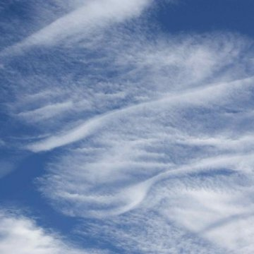

ENTJ
Cirrostratus
Cirrostratus clouds lead the way for the weather of the day, just as you lead the way for the people who look up to you. These clouds show what is to come, whether it be rain or sunshine, just as you demonstrate the path others should walk to succeed, through trials and tribulations. People look to you as they would look to these clouds to see what's coming next. Go leader go!
ENTP
Altocumulus
Altocumulus clouds, much like you, command attention in the best way. Though one may be for looks and the other for their great intellectual prowess (clouds can be intellectuals, right?), you both stand out in your own wonderful way. Plus, you're both very pretty, and that counts for something, right?
ENFJ
Altostratus
Altostratus clouds don't allow anything to outshine them, not even the sun (tthey're pretty thick man), and you, as the commander of attention you are, would never let anyone outshine you, even on accident. You are the main character of your own story, just as the altostratus is the main character of the sky. When they show up, that is.
ENFP

Cumulus Congestus
The cumulus congestus cloud is a bright bubbly sight that sets itself apart from other cumulus clouds. You are also a bright bubbly sight and you definitely stand out, in a good way! You're big beautiful balls of all things fun and you're both really fluffy (take that as you will).
ESTJ
Virga
What you and Virga clouds have in common is the fact thet you're both one in a million, rare gems that are beautiful (but can be intimidating. That's good for you but not so good for the cloud). You're capable and cool and well respected, and virga clouds, well, they're just really cool. But so are you!
ESFJ

Cirrocumulus
These clouds look as sweet as you are (because they look like honeycombs, you know?) Cirrocumulus clouds are made of cute little cloudlets thst are about as precious as the cute little traits that make up your loving and caring personality. Plus they're very nice to look at.
ESTP
Cumulus
Everyone recognizes a cumulus cloud, just like everyone recognizes how amazing you are! You're iconic, a classic, really, and you'd fit right in if you turned into a cumulus cloud right this second. It's okay if you don't want to be a cloud, just know that if you were you'd be very popular.
ESFP

Cumulonimbus
Cumulonimbus clouds are often regarded as the "King of Clouds" and Ithink that's a fitting title for you, too (king can be gender neutral, right?). Either way you're the life of the party and bring tons of flavor to the table, which a good royal would most definitely do.